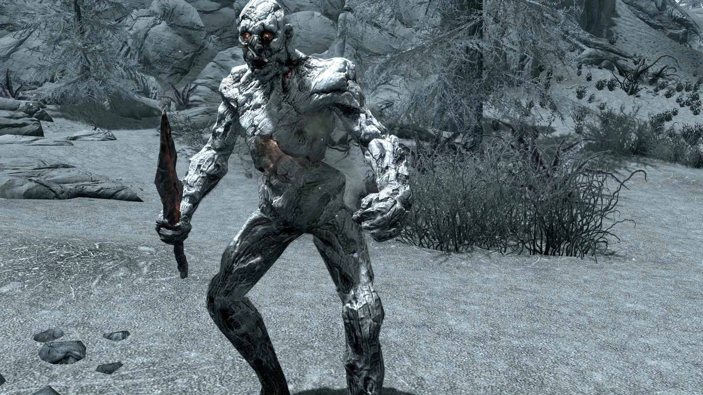
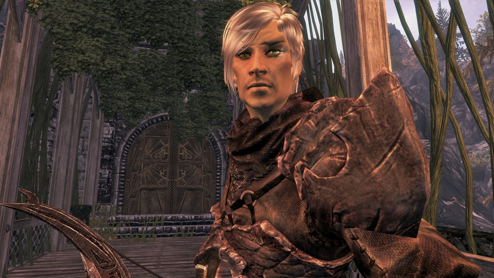
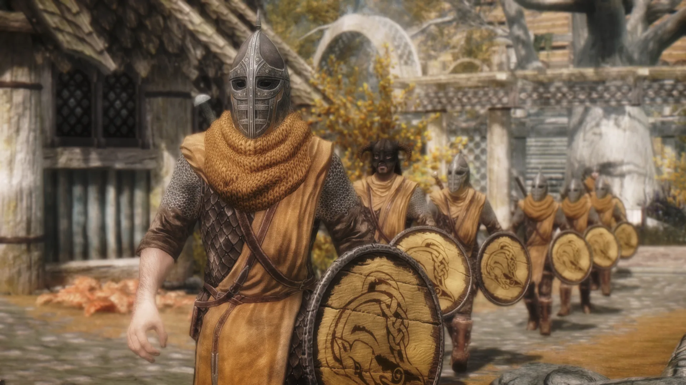
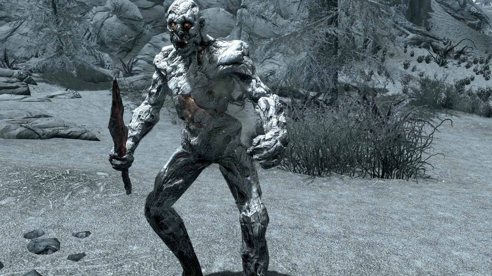
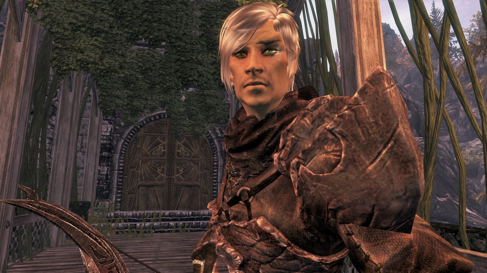
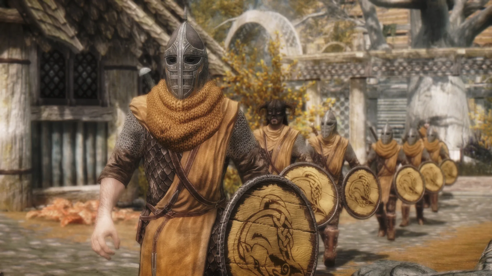
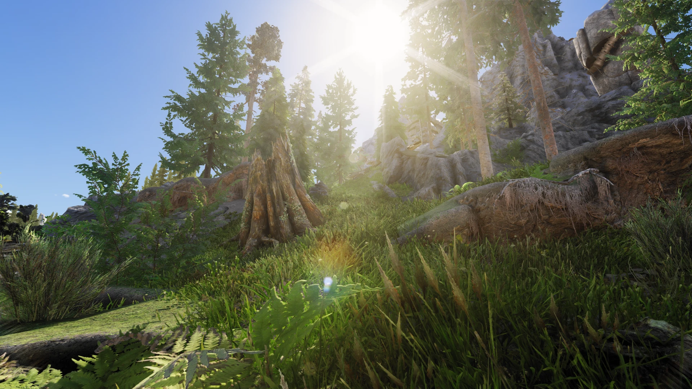
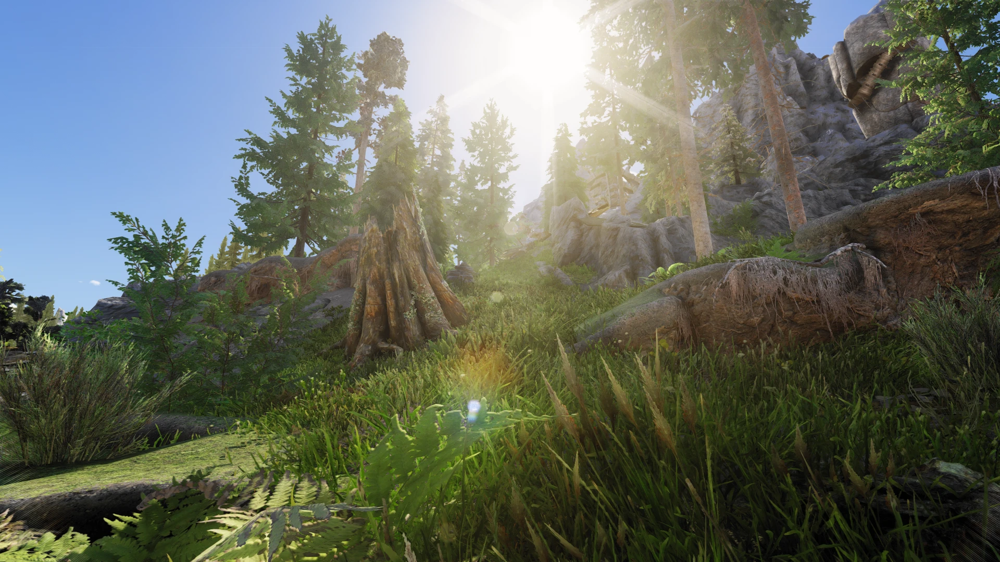

Skyrim
The Elder Scrolls V: Skyrim — это культовая ролевая игра с открытым миром, разработанная Bethesda Game Studios и выпущенная в 2011 году. Она является пятой частью в серии The Elder Scrolls и стала одной из самых влиятельных и популярных игр в истории. Основная концепция Действие происходит в провинции Скайрим — суровом северном крае континента Тамриэль, населённом нордами. Вы играете за Драконорождённого — персонажа, обладающего душой и силой дракона, чья судьба — остановить Алдуина, дракона-пожирателя мира, грозящего уничтожить всё сущее. Ключевые особенности и геймплей Беспрецедентная свобода и открытый мир: С момента выхода из подземелья в начале игры перед вами открывается весь Скайрим — огромный, дышащий мир с заснеженными горами, зелёными долинами, древними руинами, городами, деревнями и десятками пещер, крепостей и подземелий. Вы можете идти куда угодно и следовать за любой достопримечательностью на горизонте. Свобода выбора и развитие персонажа: – Раса: Выбираете одну из 10 рас, что слегка влияет на стартовые навыки. – Безклассовая система: Ваш класс определяется тем, какие навыки вы используете. Чем чаще вы применяете навык, тем больше он прокачивается. Повышение уровня навыков ведёт к повышению общего уровня персонажа. – Драконьи Крики: Уникальная магическая система, основанная на могущественных словах силы («Криках»). Их нужно находить по всему миру на древних Стенах Слов, а затем «открывать», поглощая души убитых драконов. Невероятное количество контента: – Главный сюжет о противостоянии с драконами. – Фракции: Можно вступить в Коллегию магов, Гильдию воров, Братство Тьмы, стать Соратником (оборотнем) или Имперским легионером/Братом Бури (гражданская война в Скайриме). У каждой фракции — своя многоплановая сюжетная линия. – Сотни побочных квестов: От эпичных цепочек до мелких поручений. – Исследование: Мир наполнен книгами, записками, историями и случайными событиями, которые создают невероятное погружение.
Атмосфера и саундтрек: Невероятная работа по созданию атмосферы. Суровый, но прекрасный мир, эпический оркестровый саундтрек Джереми Соула и звуки природы создают одно из самых запоминающихся игровых впечатлений. Модификации: Одна из главных причин долголетия игры. Сообщество мододелов создало десятки тысяч модов: от улучшения графики и исправления ошибок до добавления новых земель, квестов, механик, персонажей и полностью переделывающих геймплей. Skyrim — это платформа для творчества. Что делает Skyrim особенной? • Чувство приключения: Игра постоянно поощряет исследование. Каждая дорожка, каждая пещера таит в себе историю или награду. • «Это просто случилось»: Игроки обожают делиться историями о неожиданных и забавных ситуациях, возникших благодаря симуляции мира и ИИ персонажей. Например, на вас может напасть дракон, которого вскоре убьёт проходящий мимо великан, и всё это посреди вашей битвы с разбойниками. • Ролевое погружение: Вы можете жить в этом мире: жениться, купить дом, заняться ремеслом, готовить зелья, читать книги у камина.
 





 

Отзывы
Игра просто великолепная. Огромный отрытый мир и магия - все что нужно любителям фэнтези. Играл в нее несколько раз за мага, воина и вора. На самом высоком уровне сложности играть можно только магом или вором. Вором лучником или ассассином. Магом петоводом с заклинаниями из школы разрушения. Играть воином практически не возможно, прокаченная броня и здоровье, меня выносили за пару ударов. Магом или вором играть можно только уклоняясь от врагов, чтобы не попали. Хотя мой выбор маг-вор с прокаченными умениями скрытности школы разрушения.
Сможете ли вы назвать много игр, в которые можно играть годами? И нет, я не про MMORPG и ей подобным играм. Если выражаться словами моего друга, то Скайрим - ваша вечная баба. Вы уходите от неё, но всё-равно возвращаетесть. Скайрим как секта. Даже если вы сможете конкретно завязать в него играть, то помнить уж точно будете всегда. Скайрим как рог изобилия. С ним можно делать всё, что вам хочется (спасибо модам за это). Скайрим настоящий поглотитель времени. Вы даже глазом моргнуть не успеете, как прошёл день. Скайрим - игра на века. Пока вы будете делать все квесты (кроме рандомных-бесконечных), вы успеете выйти на пенсию. А если захотите пройти каждый сантиметр игры, то эта миссия по наследству перейдёт к вашим внуками. Сможете ли вы назвать много игр, в которых вы добились огромных успехов, спасли всех и всё, но вас продолжают чморить как последнего лоха даже дети? Сможете ли вы назвать много игр, где действительно можно грабить корованы? Сможете ли вы назвать много игр, где ещё только титул Бога не получили? Скайрим просто шедевр. И если никогда не играли (что очень удивительно), то не мешкайте и прикоснитесь к прекрасному. 10 сладких рулетов из 10.
Бессмысленно в наше время писать обзор о Skyrim. Мало найдётся тех, кто не знает эту игру. Еще меньше тех, кому она не нравится. Необязательно быть фанатом серии The Elder Scrolls, чтобы полюбить эту игру и этот мир, наполненный магией и драконами. Существуют игры, которые по праву можно назвать легендарными, Skyrim одна из них.Думаю многие в детстве любили сказки о драконах, так вот эта игра именно для вас. Я давно хотел написать что-то об этой игре, но опять таки это не имеет смысла, все знаю что такое Skyrim и думаю все любят Skyrim. Если Вам нравится проходить игру с отличным сюжетом, хорошей графикой, Вас не смущает то, что Вам придётся бегать, скакать на лошади, плавать на кораблях и лодках, то эта игра для Вас :) В эту игру можно играть вечно. В этом мире хочется жить. В эту игру играют уже несколько лет, и продолжат играть ещё долгие годы.